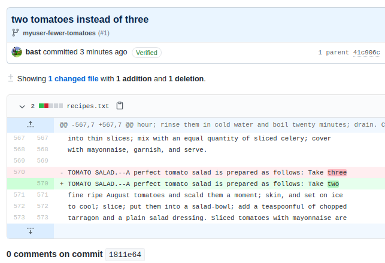
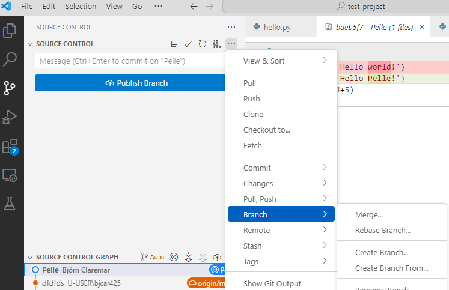

Merging¶
Learning outcomes
- practice merging branches using VS code
- practice merging/doing Pull Requests using the GitHub interface
branches using GitHub - practice fixing merge conflicts on GitHub
For teachers
Teaching goals are:
- Learners have practiced fixing merge conflicts on GitHub
- Learners have practiced merging branches using the command-line interface
gantt
title Lesson plan apply merge
dateFormat X
axisFormat %s
Introduction: intro, 0, 5s
Theory 1: theory_1, after intro, 5s
Exercise 1: crit, exercise_1, after theory_1, 40s
Feedback 1: feedback_1, after exercise_1, 10s
Workflow of merge¶
- Once a feature is ready, merge to "main" or "develop"
Command line
Example of merged branches
GitHub
- Merge
- Be sure that you merge to right branch!
- Either 1:

- Or 2:
- Good practice: Delete branch when done. You won't need it any more!
Merge conflicts¶
- When merging two branches a conflict can arise when the same file portion has been modified in two different ways on the two branches.
- A merge conflict occurs when
gitis unsure how to merge branches and asks a human for help.
Example: Two branches to be merged
Based on: https://coderefinery.github.io/git-intro/conflicts/
License: Creative Commons Attribution 4.0 International
- Permits almost any use subject to providing credit and license notice.
- Frequently used for media assets and educational materials.
- The most common license for Open Access scientific publications.
- Not recommended for software.
- Once all features are ready, switch to main!
- This is the Branch we want to merge to
The first merge will work
$ git switch main # switch to main branch
$ git branch # check that we are on main branch
$ git merge like-cilantro
Updating 4e03d4b..3caa632
Fast-forward
ingredients.txt | 2 +-
1 file changed, 1 insertion(+), 1 deletion(-)
- But the second will fail:
$ git merge dislike-cilantro
Auto-merging ingredients.txt
CONFLICT (content): Merge conflict in ingredients.txt
Automatic merge failed; fix conflicts and then commit the result.
- Without conflict Git would have automatically created a merge commit, but since there is a conflict, Git did not commit:
$ git status
You have unmerged paths.
(fix conflicts and run "git commit")
(use "git merge --abort" to abort the merge)
Unmerged paths:
(use "git add <file>..." to mark resolution)
both modified: ingredients.txt
no changes added to commit (use "git add" and/or "git commit -a")
- Git wont decide which to take and we need to decide. Observe how Git gives us clear instructions on how to move forward.
$ git diff
diff --cc ingredients.txt
index 6cacd50,6484462..0000000
--- a/ingredients.txt
+++ b/ingredients.txt
@@@ -1,4 -1,4 +1,10 @@@
++<<<<<<< HEAD
+* 2 tbsp cilantro
++=======
+ * 1/2 tbsp cilantro
++>>>>>>> dislike-cilantro
* 2 avocados
* 1 chili
* 1 lime
- Check status with git status and git diff.
- Decide what you keep (the one, the other, or both or something else). Edit the file to do this.
- Remove the resolution markers, if not already done.
- The file(s) should now look exactly how you want them.
- Check status with git status and git diff.
- Tell Git that you have resolved the conflict with git add ingredients.txt (if you use the Emacs editor with a certain plugin the editor may stage the change for you after you have removed the conflict markers).
- Verify the result with git status.
- Finally commit the merge with only git commit. Everything is pre-filled.
On GitHub¶
- Let's view the branches on Github!
- Go to Insights in the top menu and then go to Network in side-bar
- If we did this after the merging the branches do not show up.
Warning
- In GitHub MERGE is called PULL REQUEST!
- Conflicts may show up like this:

- We merge together one of the pull requests (this will work)
- Then we try to merge the other and we see a conflict:

- We try to resolve the conflict via web
- Choose the version that you wish to keep, remove conflict markers, "Mark as resolved" and commit the change

Discuss
- Merge locally or on GitHub?
- Does it matter?
- Dependent on "level"?
Test
- What does a merge do?
- Do we need merging? When? Why?
- When does a merge give a merge conflict?
- Can a
git commitresult in a merge conflict? Why? - Can a
git pushresult in a merge conflict? Why? - Can a
git pullresult in a merge conflict? Why?
Exercises¶
Content
- Practice merging
gitbranches using the GitHub interface - Practice merge conflicts between branches using GitHub
Exercise 1: Practice merging git branches using the GitHub interface¶
Learning outcomes
- practice merging git branches without a merge conflict
gitGraph
commit id: "Stuff on main"
branch develop
switch develop
commit id: "Stuff on develop"
branch anna
switch anna
commit id: "Some work"
commit id: "Branching version"
branch bertil
switch bertil
commit id: "Modify my file"
switch anna
merge bertil
commit id: "Another commit"
checkout develop
merge anna- You work in a pair or trio
- On GitHub, create a branch for person A, e.g.
annathat branches off fromdevelop - On GitHub, use the branch of person A and create a new commit.
How should it look like?

- On GitHub, create a branch for person B, e.g.
bertilthat branches off fromanna - On GitHub, use the branch of person B and create a new commit.
- On GitHub, use web interface to create a Pull Request from
bertiltoanna.
How should it look like?

The person that does this requests a reviewer.
- On GitHub, the other person approves the Pull Request and merges
-
On GitHub, use web interface to create a Pull Request from
annatodevelop. -
The person that does this requests a reviewer.
-
If there is a merge conflict, either stop (you've done the exercise, well done!) or fix the merge conflict
-
On GitHub, the other person approves the Pull Request and merges
Exercise 2: Practice merge CONFLICTS between branches using GitHub¶
Tip
- Do this individually
- But you can still help each-other!
Learning outcomes
- experience merge conflicts between branches
- fix merge conflicts between branches
gitGraph
commit id: "Before start"
commit id: "Branching version"
branch anna
switch anna
commit id: "Modify the file"
switch main
switch main
commit id: "Modify the file too"
switch main
merge anna
commit id: "End"An example picture of how to create a merge conflict.
- Create a merge conflict between two branches, e.g. a topic branch and the main branch.
- You can do so by following the structure from the figure above that shows the minimal git branching history to do so.
Answers which you may use directly if you want to
- create a branch with your name and go there
- modify the README file in learners/
, e.g. add the line Anna was hereat the bottom - commit with good message, it says "commit directly to
")
How could that look like?
- change back to main branch by the "branch button"
- Modify the same file, e.g. add the line
main person was here. - Commit with message "main person was here"`
- To generate the merge conflict, Click Code in the upper menu
- Click the button!
You will be guided in solving the conflict
- Modify the file to have the texts merged.
- Don't forget to Approve!

- You may delete the old branch from here if you want!
(Optional) exercise 3: Practice merging git branches locally (without conflict)¶
Tip
- Do this individually
- But you can still help each-other!
Continue with the branch you created in last session. In VS CODE
- Pull/Sync!
- You may branch off from
mainordevelop(if it exists) with the your name as a branch name. - Go the the branch you created.
- Modify the README file in learners/
, e.g. add the line Anna was hereat the bottom- commit with good message, it says "commit directly to
")
- commit with good message, it says "commit directly to
- Merge with the branch you branched off from,
developormain

- Then delete (from same drop-down menu as for merge)
- Push!
Merging in GitHub: We'll make a similar exercise in the next session instead¶
Summary¶
git add # add files or stage file(s)
git commit # commit staged file(s)
git status # see what is going on
git log # see history
git diff # show unstaged/uncommitted modifications
git show # show the change for a specific commit
git switch -b wild-idea # create branch, switch to it, work, work, work ...
git switch main # realize it was a bad idea, back to main/master
git branch -D wild-idea # it is gone, off to a new idea
git merge
Overview workflow

Parts to be covered!
- ☑ Source/version control
- Git
- We have a starting point!
- GitHub as remote backup
- branches
- ☑ Planning
- ☑ Analysis
- ☐ Design
- ☑ Testing
- Different levels
- ☐ Collaboration
- ☑ GitHub
- ☐ pull requests
- ☐ Sharing
- ☐ open science
- ☐ citation
- ☐ licensing
- ☐ Documentation
- ☑ in-code documentation
- ☐ documentation for users
Keypoints
- A branch is a division unit of work, to be merged with main sometime
- Both git locally and GitHub can be used
- You can delete a branch safely after merging
Reference Git¶
- Main git book
- Pro Git
- Tsitoara, Mariot, and Mariot Tsitoara. "Git best practices." Beginning Git and GitHub: A Comprehensive Guide to Version Control, Project Management, and Teamwork for the New Developer (2020): 79-86.